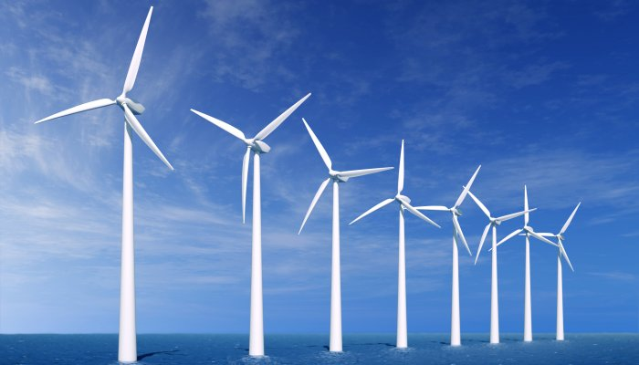
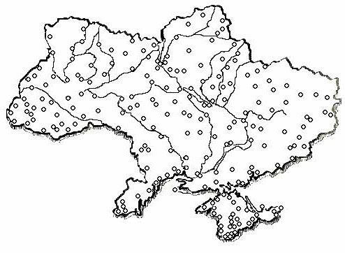
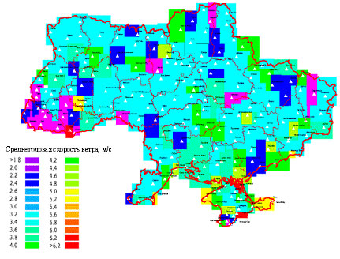

О кадастре ветров Украины

Известно, что строительство ветроэлектрических станций возможно лишь при наличии в регионе соответствующих ветроэнергетических ресурсов.
Опыт западных стран говорит о целесообразности строительства ВЭС в морских и прибрежных зонах (Дания, США, Норвегия, Бельгия, Греция и др.), а также в горных и пересеченных местностях (США, Канада). С этой точки зрения территория Украины, имеющая широкий спектр географических характеристик, является потенциально пригодной для строительства ВЭС. Об этом же говорят уже проведенные исследования ветрового потенциала.
Предварительную оценку ветроэнергетического потенциала Украины позволяют сделать компьютерные расчеты, проведенные по данным замеров скорости ветра на всех 216 метеостанциях системы Госкомгидромета Украины за двадцатилетний период. Рис. 1, на котором схематически представлено расположение метеостанций, характеризует степень охвата анализом территорий Украины.

Рис. 1. Расположение метеостанций Госкомгидромета на территории Украины
Метеостанции регистрируют данные срочных замеров скоростей и направлений ветра на высоте флюгера (в большинстве случаев 10 метров) с градацией скорости 2 м/сек. Кроме того, метеостанции располагают данными об экстремальных скоростях ветра, превышаемых один раз в год, пять и десять лет. Из 216 станций 80 расположены в потенциально богатых ветроресурсами районах - Крыму и Причерноморье. В Крыму расположены 30 станций, в Николаевской, Одесской, Херсонской, Запорожской и Донецкой областях порядка 50 станций.
Для современного технического уровня ВЭУ, которые изготавливаются в Украине, используются районы со среднегодовыми скоростями ветра на уровне 5м/с на высоте флюгера 10 метров. С увеличением высоты, скорости ветра значительно возрастают. Можно с высокой достоверностью утверждать, что в Украине имеется значительное количество перспективных с точки зрения ветроэнергетики зон. Наибольшим ветровым потенциалом обладают значительные территории, прилегающие к Черному и Азовскому морям, а также районы Карпат, Закарпатья и Прикарпатья. Кроме того, наблюдаются участки повышенного ветрового потенциала в Донбасском регионе и в Днепропетровской области. Ввод в эксплуатацию ВЭС на всех этих территориях сможет обеспечить покрытие около 30% потребности Украины в электроэнергии. Ветровой кадастр Украины приведен на рис. 2.

Законодательная база2 марта 1996 года Президентом Украины был подписан Указ № 159 "О строительстве ветровых электростанций", которым было предусмотрено:
- создание специализированных предприятий по производству ветроэнергетического оборудования на базе ГП "ПО Южный машиностроительный завод им. А.М. Макарова" и ПО "Оснастка";
- направление 0,75% средств от тарифа на электроэнергию на строительство ветровых электростанций;
- проведение мероприятий по привлечению инвестиций для строительства ветровых электростанций и производства современного ветроэнергетического оборудования.
К этому Указу была разработана и утверждена Кабинетом Министров Украины (постановление от 03.02.1997 г. № 137) "Комплексная программа строительства ветровых электростанций". Комплексная программа предусматривает строительство ветровых электростанций в системе Минтопэнерго, Госводхоза, Минобороны Украины и вневедомственных систем малых ВЭС. 8 июня 2000 г. был принят Закон Украины "О внесении изменений к некоторым законодательным актам Украины касательно стимулирования развития ветроэнергетики Украины" № 1812-III, который законодательно закрепил вопрос государственного финансирования развития ветроэнергетики, а также покупки Энергорынком Украины в полном объеме электроэнергии, вырабатываемой ВЭС.
16 марта 2007г был принят Закон Украины «Про внесение изменений в законодательные акты Украины по стимулированию мероприятий по энергосбережению» №760-V, который предоставляет льготы изготовителям ветроэнергетического оборудования по налогообложению прибыли, а также по оплате таможенных пошлин и НДС.
22 февраля 2007 года был принят в первом чтении Верховной Радой Украины закон о «зеленом» тарифе.